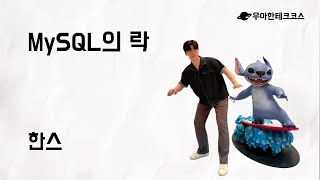
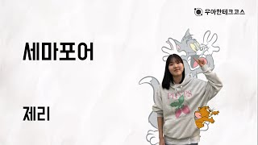

백엔드 프레임워크
동시성 제어/락 2트랜잭션/데드락 1
데이터
인덱스/쿼리 최적화 2JPA/Hibernate 1
인프라, DevOps
CI/CD 3무중단 배포 1
아키텍처, 설계
인증/인가 6
샤라웃의 자료 37 · 블로그 1 · PR 26 · 팀 문서 10
동시성 제어/락
샤라웃의 이야기 2
PR샤라웃2026년 10월 21일
[BE/refactor] 피드 인기순 정렬을 저장된 좋아요와 댓글 수로 조회 (#504)
PR샤라웃2026년 10월 16일
[BE/refactor] 피드 목록의 '내가 누른 반응' 확인용 사용자 기준 인덱스 추가 (#477)
관련 테코톡 3
테코톡[10분 테코톡] 벨로의 Race Condition 이해하기

테코톡[10분 테코톡] 한스의 MySQL의 락

테코톡[10분 테코톡] 제리의 세마포어
다른 팀의 이야기 3
같은 주제를 다룬 다른 팀의 자료예요.
PR쏙2026년 10월 12일
fix: 다운로드 잡 동시 생성 제한 레이스 컨디션 수정
팀 문서자리하나?2026년 10월 13일
ADR 0020. 초대 합류는 unique 제약과 낙관적 잠금으로 충돌을 처리한다